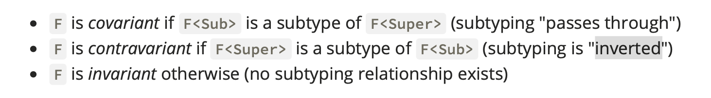
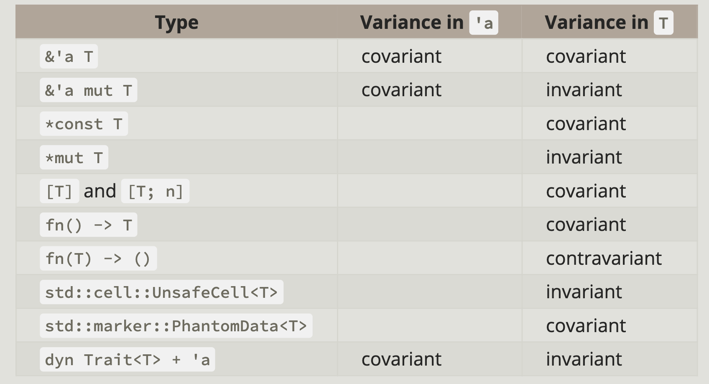
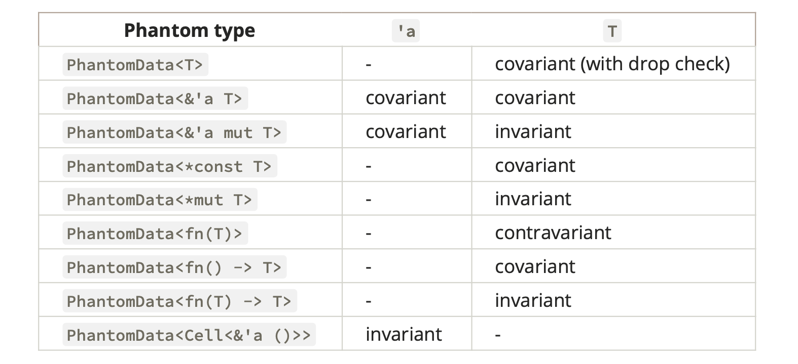

<!DOCTYPE html><html lang="en-us"><head><meta charset="UTF-8"><meta http-equiv="X-UA-Compatible" content="IE=edge,chrome=1"><title>《The Rustonomicon》读书笔记 | 曜彤.手记</title><meta name="baidu-site-verification" content="codeva-P9jyH0b1lv"><meta name="description" content="“The Dark Arts of Unsafe Rust”。"><meta name="generator" content="曜彤.手记"><meta name="keywords" content="博客, C++, C, Rust, Web, Java, IT, 编程, 开发, Android, Python, MySQL, 科技, 黑客, 技术, Javascript, 云, 大数据, 计算, 机器学习, AI, 人工智能, 创业, 产品, 公司, WebAssembly, Wasm"><meta name="HandheldFriendly" content="True"><meta name="MobileOptimized" content="320"><meta name="viewport" content="width=device-width,initial-scale=1.0,maximum-scale=1,user-scalable=0"><link rel="stylesheet" type="text/css" href="/styles/screen.css"><link rel="apple-touch-icon" sizes="57x57" href="/images/apple-touch-icon-57x57.jpg"><link rel="apple-touch-icon" sizes="60x60" href="/images/apple-touch-icon-60x60.jpg"><link rel="apple-touch-icon" sizes="72x72" href="/images/apple-touch-icon-72x72.jpg"><link rel="apple-touch-icon" sizes="76x76" href="/images/apple-touch-icon-76x76.jpg"><link rel="apple-touch-icon" sizes="114x114" href="/images/apple-touch-icon-114x114.jpg"><link rel="apple-touch-icon" sizes="120x120" href="/images/apple-touch-icon-120x120.jpg"><link rel="apple-touch-icon" sizes="144x144" href="/images/apple-touch-icon-144x144.jpg"><link rel="apple-touch-icon" sizes="152x152" href="/images/apple-touch-icon-152x152.jpg"><link rel="apple-touch-icon" sizes="196x196" href="/images/apple-touch-icon-196x196.jpg"><link rel="apple-touch-icon" sizes="310x310" href="/images/apple-touch-icon-310x310.jpg"><link href="/images/splash/iphone5_splash.png" media="(device-width: 320px) and (device-height: 568px) and (-webkit-device-pixel-ratio: 2)" rel="apple-touch-startup-image"><link href="/images/splash/iphone6_splash.png" media="(device-width: 375px) and (device-height: 667px) and (-webkit-device-pixel-ratio: 2)" rel="apple-touch-startup-image"><link href="/images/splash/iphoneplus_splash.png" media="(device-width: 621px) and (device-height: 1104px) and (-webkit-device-pixel-ratio: 3)" rel="apple-touch-startup-image"><link href="/images/splash/iphonex_splash.png" media="(device-width: 375px) and (device-height: 812px) and (-webkit-device-pixel-ratio: 3)" rel="apple-touch-startup-image"><link href="/images/splash/iphonexr_splash.png" media="(device-width: 414px) and (device-height: 896px) and (-webkit-device-pixel-ratio: 2)" rel="apple-touch-startup-image"><link href="/images/splash/iphonexsmax_splash.png" media="(device-width: 414px) and (device-height: 896px) and (-webkit-device-pixel-ratio: 3)" rel="apple-touch-startup-image"><link href="/images/splash/ipad_splash.png" media="(device-width: 768px) and (device-height: 1024px) and (-webkit-device-pixel-ratio: 2)" rel="apple-touch-startup-image"><link href="/images/splash/ipadpro1_splash.png" media="(device-width: 834px) and (device-height: 1112px) and (-webkit-device-pixel-ratio: 2)" rel="apple-touch-startup-image"><link href="/images/splash/ipadpro3_splash.png" media="(device-width: 834px) and (device-height: 1194px) and (-webkit-device-pixel-ratio: 2)" rel="apple-touch-startup-image"><link href="/images/splash/ipadpro2_splash.png" media="(device-width: 1024px) and (device-height: 1366px) and (-webkit-device-pixel-ratio: 2)" rel="apple-touch-startup-image"><link rel="icon" type="image/png" sizes="16x16" href="/images/favicon-16x16.png"><link rel="icon" type="image/png" sizes="32x32" href="/images/favicon-32x32.png"><link rel="icon" type="image/png" sizes="96x96" href="/images/favicon-96x96.png"><link rel="icon" type="image/png" sizes="128x128" href="/images/favicon-128.png"><link rel="icon" type="image/png" sizes="196x196" href="/images/favicon-196x196.png"><meta name="msapplication-TileColor" content="#FFFFFF"><meta name="msapplication-TileImage" content="mstile-144x144.png"><meta name="msapplication-square70x70logo" content="mstile-70x70.png"><meta name="msapplication-square150x150logo" content="mstile-150x150.png"><meta name="msapplication-wide310x150logo" content="mstile-310x150.png"><meta name="msapplication-square310x310logo" content="mstile-310x310.png"><meta name="msapplication-square310x310logo" content="mstile-310x310.png"><link rel="manifest" href="/manifest.webmanifest"><link rel="alternate" type="application/atom+xml" title="Atom 0.3" href="/atom.xml"><link rel="stylesheet" href="/css/prism-okaidia.css" type="text/css">
<link rel="stylesheet" href="/css/prism-line-numbers.css" type="text/css"></head><body itemscope itemtype="https://schema.org/WebPage"><div class="canvas-containter"><span>X</span></div><header itemscope itemtype="https://schema.org/WPHeader"><div class="logo"></div><h1 class="title"><a href="/" alt="曜彤.手记" title="曜彤.手记" itemprop="headline">曜彤.手记</a><a title="Atom 0.3" target="__blank" href="/atom.xml" class="rss"></a></h1><p itemprop="description" class="description">随记，关于互联网技术、产品与创业</p><nav itemscope itemtype="https://schema.org/SiteNavigationElement"><ul><li itemprop="name" class="menu-item"><a href="/ " alt="首页" title="首页" itemprop="url">首页</a></li><li itemprop="name" class="menu-item"><a href="/articles" alt="文章" title="文章" itemprop="url">文章</a></li><li itemprop="name" class="menu-item"><a href="/readings" alt="阅读" title="阅读" itemprop="url">阅读</a></li><li itemprop="name" class="menu-item"><a href="/cards" alt="快记" title="快记" itemprop="url">快记</a></li><li itemprop="name" class="menu-item"><a href="/tags" alt="标签" title="标签" itemprop="url">标签</a></li><li itemprop="name" class="menu-item"><a href="/about" alt="关于" title="关于" itemprop="url">关于</a></li></ul></nav><div class="dynamic-slot"></div><div class="toc-body"><div class="bookmark"></div><ol class="toc"><li class="toc-item toc-level-3"><a class="toc-link" href="#Chapter-1-Meet-Safe-and-Unsafe"><span class="toc-text">Chapter 1 - Meet Safe and Unsafe</span></a></li><li class="toc-item toc-level-3"><a class="toc-link" href="#Chapter-2-Data-Representation-in-Rust"><span class="toc-text">Chapter 2 - Data Representation in Rust</span></a></li><li class="toc-item toc-level-3"><a class="toc-link" href="#Chapter-3-Ownership-and-Lifetimes"><span class="toc-text">Chapter 3 - Ownership and Lifetimes</span></a></li><li class="toc-item toc-level-3"><a class="toc-link" href="#Chapter-4-Type-Conversions"><span class="toc-text">Chapter 4 - Type Conversions</span></a></li><li class="toc-item toc-level-3"><a class="toc-link" href="#Chapter-5-Working-With-Uninitialized-Memory"><span class="toc-text">Chapter 5 - Working With Uninitialized Memory</span></a></li></ol></div><div class="space"></div></header><main itemscope itemtype="https://schema.org/Blog"><script src="https://shadow.elemecdn.com/npm/zoomage.js@latest/dist/zoomage.min.js" type="text/javascript"></script><script src="https://shadow.elemecdn.com/npm/axios@0.18.0/dist/axios.min.js" type="text/javascript"></script><script src="/scripts/post.js" type="text/javascript"></script><div class="touch-top"><span></span></div><article post-id="《The Rustonomicon》读书笔记" class="full article-post"><h1 itemprop="headline" class="align-center">《The Rustonomicon》读书笔记</h1><div class="content"><div class="article-meta"><span class="post-meta"><br>Created on<time itemprop="dateCreated" datetime="2021-04-12T16:56:32.000Z"> 2021 / 04 / 13, 00:56:32</time></span><span class="page-tag-anchor"><a href="/tags/Rust" itemprop="url">#Rust</a>&nbsp;&nbsp;</span></div><p>“The Dark Arts of Unsafe Rust”。</p>
<h3 id="Chapter-1-Meet-Safe-and-Unsafe"><a href="#Chapter-1-Meet-Safe-and-Unsafe" class="headerlink" title="Chapter 1 - Meet Safe and Unsafe"></a>Chapter 1 - Meet Safe and Unsafe</h3><ol>
<li><span class="pn">Page 3</span>可以使用编译器标记 <code>#![forbid(unsafe_code)]</code> 来表明仅允许使用安全（非 <code>unsafe</code>）的 Rust 语言特性。</li>
<li><span class="pn">Page 4</span><strong>为何可以在 Rust 中引用临时值</strong>（即 C++ 中的“右值”）？</li>
</ol>
<ul>
<li>表达式的<strong>临时作用域</strong>是用于临时变量的一个范围，该临时变量在环境上下文中使用时将保留该表达式的结果，除非将其进行常量传播（当可以在不更改运行时行为的情况下将表达式以常量写入，借用并在原始写入表达式的位置解引用该借用时，将值表达式提升为 “<code>&#39;static</code>” 插槽）。除了 <em>lifetime</em> 扩展外，表达式的临时作用域是包含该表达式的最小作用域；</li>
<li>由于 “<em>temporary lifetime extension</em>” 机制的存在，<code>let</code> 语句中表达式的临时作用域有时会扩展到包含 <code>let</code> 语句的块的范围。当基于某些句法规则，导致通常的临时作用域太小时，便会执行此操作。</li>
</ul>
<pre class="line-numbers language-rust"><code class="language-rust"><span class="token keyword">let</span> x <span class="token operator">=</span> <span class="token operator">&amp;</span><span class="token keyword">mut</span> <span class="token number">0</span><span class="token punctuation">;</span>
<span class="token comment" spellcheck="true">// Usually a temporary would be dropped by now, but the temporary for `0` lives to the end of the block.</span>
<span class="token operator">*</span>x <span class="token operator">=</span> <span class="token number">1</span><span class="token punctuation">;</span>
<span class="token function">println!</span><span class="token punctuation">(</span><span class="token string">"{}"</span><span class="token punctuation">,</span> x<span class="token punctuation">)</span><span class="token punctuation">;</span>  <span class="token comment" spellcheck="true">// 1.</span>
<span aria-hidden="true" class="line-numbers-rows"><span></span><span></span><span></span><span></span></span></code></pre>
<ol start="3">
<li><span class="pn">Page 4</span>Rust 中一些<strong>常见的 unsafe 函数或 trait</strong>：</li>
</ol>
<ul>
<li><code>slice::get_unchecked</code>：在不进行边界检查的情况下，<strong>返回对一个元素或子序列的引用</strong>。当索引的位置超出集合大小时，其行为是未定义的，因此对于传入的索引值要提前确认其是否有效。</li>
</ul>
<pre class="line-numbers language-rust"><code class="language-rust"><span class="token keyword">fn</span> <span class="token function">main</span><span class="token punctuation">(</span><span class="token punctuation">)</span> <span class="token punctuation">{</span>
    <span class="token keyword">let</span> x <span class="token operator">=</span> <span class="token punctuation">[</span><span class="token number">1</span><span class="token punctuation">,</span> <span class="token number">2</span><span class="token punctuation">,</span> <span class="token number">4</span><span class="token punctuation">]</span><span class="token punctuation">;</span>
    <span class="token keyword">unsafe</span> <span class="token punctuation">{</span>
        <span class="token function">assert_eq!</span><span class="token punctuation">(</span>x<span class="token punctuation">.</span><span class="token function">get_unchecked</span><span class="token punctuation">(</span><span class="token number">1</span><span class="token punctuation">)</span><span class="token punctuation">,</span> <span class="token operator">&amp;</span><span class="token number">2</span><span class="token punctuation">)</span><span class="token punctuation">;</span>
    <span class="token punctuation">}</span>
<span class="token punctuation">}</span>
<span aria-hidden="true" class="line-numbers-rows"><span></span><span></span><span></span><span></span><span></span><span></span></span></code></pre>
<ul>
<li><code>mem::transmute</code>：重新按照给定类型来解释值（按位）；其行为与 C 中的 <code>memcpy</code> 类似。该方法在某些情况下不具备可移植性，比如<strong>某些机器上的函数指针与数据指针其大小可能不同</strong>。一个例子：将指针转换为函数指针：</li>
</ul>
<pre class="line-numbers language-rust"><code class="language-rust"><span class="token keyword">fn</span> <span class="token function">main</span><span class="token punctuation">(</span><span class="token punctuation">)</span> <span class="token punctuation">{</span>
    <span class="token keyword">fn</span> <span class="token function">foo</span><span class="token punctuation">(</span><span class="token punctuation">)</span> <span class="token punctuation">-></span> i32 <span class="token punctuation">{</span>
        <span class="token number">0</span>
    <span class="token punctuation">}</span>
    <span class="token comment" spellcheck="true">// "*const ()" is similar to "const void*" in C/C++.</span>
    <span class="token keyword">let</span> pointer <span class="token operator">=</span> foo <span class="token keyword">as</span> <span class="token operator">*</span><span class="token keyword">const</span> <span class="token punctuation">(</span><span class="token punctuation">)</span><span class="token punctuation">;</span>
    <span class="token keyword">let</span> function <span class="token operator">=</span> <span class="token keyword">unsafe</span> <span class="token punctuation">{</span>
        std<span class="token punctuation">:</span><span class="token punctuation">:</span>mem<span class="token punctuation">:</span><span class="token punctuation">:</span>transmute<span class="token punctuation">:</span><span class="token punctuation">:</span><span class="token operator">&lt;</span><span class="token operator">*</span><span class="token keyword">const</span> <span class="token punctuation">(</span><span class="token punctuation">)</span><span class="token punctuation">,</span> <span class="token keyword">fn</span><span class="token punctuation">(</span><span class="token punctuation">)</span> <span class="token punctuation">-></span> i32<span class="token operator">></span><span class="token punctuation">(</span>pointer<span class="token punctuation">)</span>
    <span class="token punctuation">}</span><span class="token punctuation">;</span>
    <span class="token function">assert_eq!</span><span class="token punctuation">(</span><span class="token function">function</span><span class="token punctuation">(</span><span class="token punctuation">)</span><span class="token punctuation">,</span> <span class="token number">0</span><span class="token punctuation">)</span><span class="token punctuation">;</span>
<span class="token punctuation">}</span>
<span aria-hidden="true" class="line-numbers-rows"><span></span><span></span><span></span><span></span><span></span><span></span><span></span><span></span><span></span><span></span><span></span></span></code></pre>
<ul>
<li>每一个指向“可变类型”的原始指针都有一个 <code>offset</code> 方法，可以通过该方法来移动指针（同 C/C++ 对指针的增减类似）。当访问位置超出有效内存时，其行为是未定义的。</li>
</ul>
<pre class="line-numbers language-rust"><code class="language-rust"><span class="token keyword">fn</span> <span class="token function">main</span><span class="token punctuation">(</span><span class="token punctuation">)</span> <span class="token punctuation">{</span>
    <span class="token keyword">let</span> s<span class="token punctuation">:</span> <span class="token operator">&amp;</span>str <span class="token operator">=</span> <span class="token string">"123"</span><span class="token punctuation">;</span>
    <span class="token keyword">let</span> ptr<span class="token punctuation">:</span> <span class="token operator">*</span><span class="token keyword">const</span> u8 <span class="token operator">=</span> s<span class="token punctuation">.</span><span class="token function">as_ptr</span><span class="token punctuation">(</span><span class="token punctuation">)</span><span class="token punctuation">;</span>

    <span class="token keyword">unsafe</span> <span class="token punctuation">{</span>
        <span class="token function">println!</span><span class="token punctuation">(</span><span class="token string">"{}"</span><span class="token punctuation">,</span> <span class="token operator">*</span>ptr<span class="token punctuation">.</span><span class="token function">offset</span><span class="token punctuation">(</span><span class="token number">1</span><span class="token punctuation">)</span> <span class="token keyword">as</span> char<span class="token punctuation">)</span><span class="token punctuation">;</span>
        <span class="token function">println!</span><span class="token punctuation">(</span><span class="token string">"{}"</span><span class="token punctuation">,</span> <span class="token operator">*</span>ptr<span class="token punctuation">.</span><span class="token function">offset</span><span class="token punctuation">(</span><span class="token number">2</span><span class="token punctuation">)</span> <span class="token keyword">as</span> char<span class="token punctuation">)</span><span class="token punctuation">;</span>
    <span class="token punctuation">}</span>
<span class="token punctuation">}</span>
<span aria-hidden="true" class="line-numbers-rows"><span></span><span></span><span></span><span></span><span></span><span></span><span></span><span></span><span></span></span></code></pre>
<ul>
<li>FFI 方法；</li>
<li><em>marker trait</em> <code>Send</code>：保证实现该 trait 的实体可以被安全地转移（move）到其他线程；</li>
<li><em>marker trait</em> <code>Sync</code>：保证实现该 trait 的实体可以通过引用，被安全地在多个线程间共享；</li>
<li><em>trait</em> <code>GlobalAlloc</code>：可用于自定义内存分配器。</li>
</ul>
<ol start="4">
<li><span class="pn">Page 6</span>unsafe 的能力：</li>
</ol>
<ul>
<li>解引用原始指针；</li>
<li>调用 unsafe 方法（包括 C 方法，编译器 intrinsics，以及原始分配器）；</li>
<li>实现 unsafe traits；</li>
<li>改变 static 静态全局变量的值；</li>
<li>访问 union 中的字段。</li>
</ul>
<ol start="5">
<li><span class="pn">Page 9</span>unsafe 操作的合理性必然取决于通过其他 “safe” 操作建立的状态。</li>
</ol>
<h3 id="Chapter-2-Data-Representation-in-Rust"><a href="#Chapter-2-Data-Representation-in-Rust" class="headerlink" title="Chapter 2 - Data Representation in Rust"></a>Chapter 2 - Data Representation in Rust</h3><ol start="6">
<li><span class="pn">Page 10</span><strong>对齐</strong>：</li>
</ol>
<ul>
<li>所有类型都有以“字节”为单位的对齐要求。最小的对齐要求为 1 字节，其他大小均须为 2 的整数次幂个字节；<strong>Primitives 类型（整数、浮点数、布尔值，以及字符值）通常对齐到它们类型本身的大小</strong>（当然也受到具体平台的限制）。类型的大小必须始终是其对齐字节的倍数（如 <em>struct</em>），这样可以确保对于该类型的数组，可以始终通过偏移其大小的整数倍字节来索引数字中该类型的元素；</li>
<li>对于动态大小类型，其大小与对齐方式可能无法在静态编译时得知；</li>
<li>默认情况下，<strong>复合类型的整体大小需要是其内部字段最大对齐大小的整数倍</strong>；并且，<strong>内部的每一个字段的起始偏移也需要为该字段对齐字节大小的整数倍</strong>（同 C/C++ 一致）。Rust 会自动插入“对齐字节”以满足上述要求。</li>
</ul>
<pre class="line-numbers language-rust"><code class="language-rust"><span class="token keyword">struct</span> A <span class="token punctuation">{</span>
  a<span class="token punctuation">:</span> u8<span class="token punctuation">,</span>
  b<span class="token punctuation">:</span> u32<span class="token punctuation">,</span>
  c<span class="token punctuation">:</span> u16<span class="token punctuation">,</span>
<span class="token punctuation">}</span>
<span class="token comment" spellcheck="true">// after alignment (the fields ordering may be changed):</span>
<span class="token comment" spellcheck="true">// struct A {</span>
<span class="token comment" spellcheck="true">//   a: u8,</span>
<span class="token comment" spellcheck="true">//   _pad1: [u8; 3],</span>
<span class="token comment" spellcheck="true">//   b: u32,</span>
<span class="token comment" spellcheck="true">//   c: u16,</span>
<span class="token comment" spellcheck="true">//   _pad2: [u8; 2],</span>
<span class="token comment" spellcheck="true">// }</span>
<span aria-hidden="true" class="line-numbers-rows"><span></span><span></span><span></span><span></span><span></span><span></span><span></span><span></span><span></span><span></span><span></span><span></span><span></span></span></code></pre>
<ul>
<li>对于两个拥有同样顺序字段的 <em>struct</em>，Rust 会保证同一类型的不同实例其内存布局是完全相同的；但目前并不保证不同类型的实例之间其内存布局（字段序）的相似性，编译器可能会对字段进行排序以优化内存布局；</li>
<li>Enum 类型的实际内存布局：</li>
</ul>
<pre class="line-numbers language-rust"><code class="language-rust"><span class="token keyword">enum</span> Foo <span class="token punctuation">{</span>
    <span class="token function">A</span><span class="token punctuation">(</span>u32<span class="token punctuation">)</span><span class="token punctuation">,</span>
    <span class="token function">B</span><span class="token punctuation">(</span>u64<span class="token punctuation">)</span><span class="token punctuation">,</span>
    <span class="token function">C</span><span class="token punctuation">(</span>u8<span class="token punctuation">)</span><span class="token punctuation">,</span> 
<span class="token punctuation">}</span>
<span class="token comment" spellcheck="true">// layout in memory:</span>
<span class="token comment" spellcheck="true">// struct FooRepr {</span>
<span class="token comment" spellcheck="true">//     data: u64, // this is either a u64, u32, or u8 based on `tag`. </span>
<span class="token comment" spellcheck="true">//     tag: u8, // 0 = A, 1 = B, 2 = C.</span>
<span class="token comment" spellcheck="true">// }</span>
<span aria-hidden="true" class="line-numbers-rows"><span></span><span></span><span></span><span></span><span></span><span></span><span></span><span></span><span></span><span></span></span></code></pre>
<ul>
<li>Rust 中的“<strong>空指针优化</strong>”：*The “null pointer optimization” basically means that if you have an enum with <strong>two variants</strong>, where <strong>one variant has no associated data</strong>, and <strong>the other variant has associated data where the bit pattern of all zeros isn’t a valid value</strong>, then the <strong>enum</strong> itself will take exactly the same amount of space as that associated value, using the all zeroes bit pattern to indicate that it’s the other variant.*；因此只要某个类型的值（<code>Box&lt;T&gt;</code> \ <code>Vec&lt;T&gt;</code> \ <code>String</code> \ <code>&amp;T</code> \ <code>&amp;mut T</code>）包含 <em>non-nullable pointer</em>，就可以被直接放到诸如 <code>Option&lt;T&gt;</code> 中，而不会产生任何额外的性能损耗。即 <em>enum</em> 在实现时可以将 <em>tag</em> 与 <em>data</em> 两者位模式合并起来表示两个不同值。</li>
</ul>
<pre class="line-numbers language-rust"><code class="language-rust"><span class="token function">assert_eq!</span><span class="token punctuation">(</span>core<span class="token punctuation">:</span><span class="token punctuation">:</span>mem<span class="token punctuation">:</span><span class="token punctuation">:</span>size_of<span class="token punctuation">:</span><span class="token punctuation">:</span><span class="token operator">&lt;</span>Option<span class="token operator">&lt;</span><span class="token operator">&amp;</span>T<span class="token operator">>></span><span class="token punctuation">(</span><span class="token punctuation">)</span><span class="token punctuation">,</span> core<span class="token punctuation">:</span><span class="token punctuation">:</span>mem<span class="token punctuation">:</span><span class="token punctuation">:</span>size_of<span class="token punctuation">:</span><span class="token punctuation">:</span><span class="token operator">&lt;</span><span class="token operator">&amp;</span>T<span class="token operator">></span><span class="token punctuation">(</span><span class="token punctuation">)</span><span class="token punctuation">)</span><span class="token punctuation">;</span>
<span aria-hidden="true" class="line-numbers-rows"><span></span></span></code></pre>
<ol start="7">
<li><span class="pn">Page 13</span>特殊大小类型：</li>
</ol>
<p>- <em><strong>动态大小类型（DSTs）</strong></em>：</p>
<ul>
<li>所有指向 DST 类型的指针都会变为一个 <em>wide pointer</em>，这个指针包含一个原对象指针，和对应的辅助指针/数据；</li>
<li>两种 DSTs：<ul>
<li><strong>trait object</strong>：<code>dyn MyTrait</code>；<ul>
<li>对象的原始类型信息将被删除，以利于运行时反射。对应的 vtable 则包含了使用该类型所需的所有信息。辅助 trait object 指针的信息是 <strong>vtable 指针</strong>。应用可以从 vtable 中动态得到被指向对象的运行时大小。</li>
</ul>
</li>
<li><strong>切片</strong>：<code>[T]</code> \ <code>str</code> 等。<ul>
<li>一个“切片”是对应某段内存（<em>Vec</em> 或数组）的一个“视图”，辅助切片指针的是<strong>该指针所指向的元素数量（<code>usize</code>）</strong>。被指向切片对象的运行时大小即元素的静态类型大小乘以元素的数量。</li>
</ul>
</li>
</ul>
</li>
<li>Rust 中也支持类似 C 中的“<strong>柔性数组</strong>（<em>flexible array</em>）”，即 <code>struct</code> 中的最后一个元素允许是大小未知的数组类型。</li>
</ul>
<pre class="line-numbers language-rust"><code class="language-rust"><span class="token comment" spellcheck="true">// custom DST (limited usage).</span>
<span class="token comment" spellcheck="true">// making the type generic and performing an "unsizing coercion".</span>
<span class="token keyword">struct</span> MySuperSliceable<span class="token operator">&lt;</span>T<span class="token punctuation">:</span> ?Sized<span class="token operator">></span> <span class="token punctuation">{</span>
    info<span class="token punctuation">:</span> u32<span class="token punctuation">,</span>
    data<span class="token punctuation">:</span> T<span class="token punctuation">,</span>
<span class="token punctuation">}</span>
<span class="token keyword">fn</span> <span class="token function">main</span><span class="token punctuation">(</span><span class="token punctuation">)</span> <span class="token punctuation">{</span>
    <span class="token keyword">let</span> sized <span class="token operator">=</span> MySuperSliceable <span class="token punctuation">{</span>
        info<span class="token punctuation">:</span> <span class="token number">17</span><span class="token punctuation">,</span>
        data<span class="token punctuation">:</span> <span class="token punctuation">[</span><span class="token number">0</span><span class="token punctuation">;</span> <span class="token number">8</span><span class="token punctuation">]</span><span class="token punctuation">,</span>
    <span class="token punctuation">}</span><span class="token punctuation">;</span>
    <span class="token keyword">let</span> dynamic <span class="token operator">=</span> <span class="token operator">&amp;</span>sized<span class="token punctuation">;</span>
    <span class="token comment" spellcheck="true">// prints: "17 [0, 0, 0, 0, 0, 0, 0, 0]".</span>
    <span class="token function">println!</span><span class="token punctuation">(</span><span class="token string">"{} {:?}"</span><span class="token punctuation">,</span> dynamic<span class="token punctuation">.</span>info<span class="token punctuation">,</span> <span class="token operator">&amp;</span>dynamic<span class="token punctuation">.</span>data<span class="token punctuation">)</span><span class="token punctuation">;</span>
<span class="token punctuation">}</span>
<span aria-hidden="true" class="line-numbers-rows"><span></span><span></span><span></span><span></span><span></span><span></span><span></span><span></span><span></span><span></span><span></span><span></span><span></span><span></span><span></span></span></code></pre>
<p>- <em><strong>零大小类型（ZSTs）</strong></em>：</p>
<pre class="line-numbers language-rust"><code class="language-rust"><span class="token keyword">struct</span> Noting<span class="token punctuation">;</span>  <span class="token comment" spellcheck="true">// no fields = no size.</span>

<span class="token comment" spellcheck="true">// all fields have no size = no size.</span>
<span class="token keyword">struct</span> LotsOfNothing <span class="token punctuation">{</span>
    foo<span class="token punctuation">:</span> Nothing<span class="token punctuation">,</span>
    qux<span class="token punctuation">:</span> <span class="token punctuation">(</span><span class="token punctuation">)</span><span class="token punctuation">,</span>      <span class="token comment" spellcheck="true">// empty tuple has no size.</span>
    baz<span class="token punctuation">:</span> <span class="token punctuation">[</span>u8<span class="token punctuation">;</span> <span class="token number">0</span><span class="token punctuation">]</span><span class="token punctuation">,</span> <span class="token comment" spellcheck="true">// empty array has no size.</span>
<span class="token punctuation">}</span>
<span aria-hidden="true" class="line-numbers-rows"><span></span><span></span><span></span><span></span><span></span><span></span><span></span><span></span></span></code></pre>
<ul>
<li>Rust 可以将任何产生或存储 ZST 的操作都简化为“无操作（no-op）”；</li>
<li>ZSTs 的引用必须是 non-null 且适当对齐的；解引用一个 null 或未对齐的 ZST 的指针是未定义行为。</li>
</ul>
<p>- <em><strong>空类型</strong></em>：</p>
<ul>
<li>该类型无法被实例化；</li>
<li>Rust 中的 <code>*const ()</code> 与 C/C++ 中的 <code>void*</code> 类似；</li>
<li>可用于<strong>类型级别的“不可达”</strong>。</li>
</ul>
<pre class="line-numbers language-rust"><code class="language-rust"><span class="token keyword">enum</span> Void <span class="token punctuation">{</span><span class="token punctuation">}</span>

<span class="token keyword">let</span> res<span class="token punctuation">:</span> Result<span class="token operator">&lt;</span>u32<span class="token punctuation">,</span> Void<span class="token operator">></span> <span class="token operator">=</span> <span class="token function">Ok</span><span class="token punctuation">(</span><span class="token number">0</span><span class="token punctuation">)</span><span class="token punctuation">;</span>

<span class="token comment" spellcheck="true">// Err doesn't exist anymore, so Ok is actually irrefutable.</span>
<span class="token keyword">let</span> <span class="token function">Ok</span><span class="token punctuation">(</span>num<span class="token punctuation">)</span> <span class="token operator">=</span> res<span class="token punctuation">;</span>
<span aria-hidden="true" class="line-numbers-rows"><span></span><span></span><span></span><span></span><span></span><span></span></span></code></pre>
<ol start="8">
<li><span class="pn">Page 17</span>可选的数据布局形式（repr）：</li>
</ol>
<p>- <b>repr(C)</b>：</p>
<pre class="line-numbers language-rust"><code class="language-rust"><span class="token attribute attr-name">#[repr(C)]</span>
<span class="token keyword">pub</span> <span class="token keyword">struct</span> Rect <span class="token punctuation">{</span> x<span class="token punctuation">:</span> f32<span class="token punctuation">,</span> y<span class="token punctuation">:</span> f32<span class="token punctuation">,</span> width<span class="token punctuation">:</span> f32<span class="token punctuation">,</span> height<span class="token punctuation">:</span> f32 <span class="token punctuation">}</span>
<span aria-hidden="true" class="line-numbers-rows"><span></span><span></span></span></code></pre>
<ul>
<li>最重要的一种布局形式，参考于 C/C++ 规范（字段顺序、大小、对齐方式等）；</li>
<li>一般用于 FFI 边界和布局控制；<ul>
<li>ZSTs 大小仍然为零；</li>
<li>DST 指针和 <em>tuple</em> 不是 C 中的概念，因此非 FFI-safe；</li>
<li>带有字段的枚举类型不是 C/C++ 中的概念，但可通过 bridging 的方式来实现；</li>
<li>如果 T 是 FFI-safe 的非空指针，则 <code>Option&lt;T&gt;</code> 的布局和 ABI 与 T 相同，因此是 FFI-safe 的；</li>
<li><em>tuple struct</em> 与 C 中的 <code>struct</code> 类似，只是没有命名字段；</li>
<li>对于“空枚举”，该表示形式等同于某个具体的 <em>repr(u?)</em> 之一。所选择的大小是目标平台的 C 应用程序二进制接口（ABI）的默认枚举大小。<strong>C 语言中的枚举表示形式是由实现定义的</strong>，因此，这实际上只是“最佳猜测”。特别是，当使用某些特殊标记编译感兴趣的 C 代码时，这可能是不正确的；</li>
<li>即使在 C/C++ 中允许这样做，带有 <em>repr(C)</em> 或 <em>repr(u?)</em> 的空枚举也可能不会设置为没有相应变体的整数值。构造不与其任何变体相匹配的枚举实例是未定义的行为。</li>
</ul>
</li>
</ul>
<p>- <b>repr(transparent)</b>：</p>
<ul>
<li>只能用于<strong>具有单个非零大小字段</strong>（可能存在其他零大小字段）的 <code>struct</code>。而整个 <code>struct</code> 的布局和 ABI 则与该非零字段相同；目的是使在单个字段和 <code>struct</code> 之间转换成为可能。一个例子是 <code>UnsafeCell</code>，可以将其转换为它所包装的类型；同样，通过 FFI 来传递这样的 <code>struct</code> 可以确保在另一侧能够得到所期望的 <code>struct</code> 内部的字段类型。特别是，对于 <code>struct Foo(f32)</code>，其始终具有与 <code>f32</code> 相同的 ABI 是必要的。</li>
</ul>
<p>- <b>repr(u?)</b> 与 <b>repr(i?)</b>：</p>
<ul>
<li>这种模式<strong>指定了空枚举类型的大小</strong>。如果判别式溢出必须容纳的整数，则将产生编译时错误。可以通过将溢出元素显式设置为 0 来手动要求 Rust 允许这样做。但是 Rust 不允许创建两个变量具有相同判别式的枚举。没有 <em>repr(C)</em> 或 <em>repr(u?)</em> 的空枚举仍然是 Rust 原生类型，并且不会具有稳定的 ABI 表示。添加 repr 会导致将其视为与用于 ABI 的指定整数大小完全相同；</li>
<li><b>如果枚举具有字段，则其效果类似于 <em>repr(C)</em></b>，因为存在类型的已定义布局。这样就可以将枚举传递给 C 代码，或访问类型的原始表示并直接操纵其标记和字段。向枚举添加显式 repr 会抑制空指针优化。这些 reprs 对 <code>struct</code> 没有影响。</li>
</ul>
<p>- <b>repr(packed)</b>：</p>
<ul>
<li>该模式会强制 Rust 剥离所有填充字节，并且仅将类型与“字节”对齐。这可能会改善内存占用，但可能会产生其他负面影响。特别是，大多数体系结构都强烈希望将值对齐。这可能意味着未对齐的负载会受到惩罚（x86），甚至是故障（某些 ARM 芯片）。对于简单的情况，例如直接加载或存储打包的字段，编译器可能能够解决移位和掩码的对齐问题。但是，如果引用打包字段，则编译器不太可能避免未对齐的负载。这是 <em>repr(C)</em> 或 <em>repr(u?)</em> 的<strong>修饰符</strong>。</li>
</ul>
<p>- <b>repr(align(n))</b>：</p>
<ul>
<li>其中 n 是 2 的幂。将强制类型具有至少 n 的对齐方式。这可以实现多种技巧，例如<strong>确保数组的相邻元素永远不会彼此共享同一个缓存行</strong>（可能会加快某些种类的并发代码的速度）。这是 <em>repr(C)</em> 或 <em>repr(u?)</em> 的<strong>修饰符</strong>，它与 <em>repr(packed)</em> 不兼容。</li>
</ul>
<h3 id="Chapter-3-Ownership-and-Lifetimes"><a href="#Chapter-3-Ownership-and-Lifetimes" class="headerlink" title="Chapter 3 - Ownership and Lifetimes"></a>Chapter 3 - Ownership and Lifetimes</h3><ol start="9">
<li><span class="pn">Page 21</span><strong>当变量或指针在同一时间指向了同一块发生重叠的内存区域时</strong>，即可称它们发生了 <em>alias</em>。由于 Rust 的所有权机制可以避免这种情况的发生，因此编译器也可以进行相应的优化：</li>
</ol>
<ul>
<li>对于某些值，当其没有被指针引用时，可以被存放到寄存器中；</li>
<li>通过证明在上一次读操作后，内存没有被改变，来减少一些无用的内存读操作（多次读合并为一次）；</li>
<li>通过证明某块内存在下一次写入之前永远不会被读取，来消除重复无用的内存写操作（多次写合并为一次）；</li>
<li>对内存的读写操作进行重排序，前提是它们彼此并不相互依赖。</li>
</ul>
<p>- <em><strong>优化前</strong></em>：</p>
<pre class="line-numbers language-rust"><code class="language-rust"><span class="token comment" spellcheck="true">// before optimization.</span>
<span class="token keyword">fn</span> <span class="token function">compute</span><span class="token punctuation">(</span>input<span class="token punctuation">:</span> <span class="token operator">&amp;</span>u32<span class="token punctuation">,</span> output<span class="token punctuation">:</span> <span class="token operator">&amp;</span><span class="token keyword">mut</span> u32<span class="token punctuation">)</span> <span class="token punctuation">{</span>
    <span class="token keyword">if</span> <span class="token operator">*</span>input <span class="token operator">></span> <span class="token number">10</span> <span class="token punctuation">{</span>
        <span class="token operator">*</span>output <span class="token operator">=</span> <span class="token number">1</span><span class="token punctuation">;</span> 
    <span class="token punctuation">}</span>
    <span class="token keyword">if</span> <span class="token operator">*</span>input <span class="token operator">></span> <span class="token number">5</span> <span class="token punctuation">{</span> 
        <span class="token operator">*</span>output <span class="token operator">*=</span> <span class="token number">2</span><span class="token punctuation">;</span>
    <span class="token punctuation">}</span> 
<span class="token punctuation">}</span>
<span aria-hidden="true" class="line-numbers-rows"><span></span><span></span><span></span><span></span><span></span><span></span><span></span><span></span><span></span></span></code></pre>
<p>- <em><strong>优化后</strong></em>（前提：引用 input 与 output 没有发生 <em>aliasing</em>）：</p>
<pre class="line-numbers language-rust"><code class="language-rust"><span class="token comment" spellcheck="true">// after optimization.</span>
<span class="token keyword">fn</span> <span class="token function">compute</span><span class="token punctuation">(</span>input<span class="token punctuation">:</span> <span class="token operator">&amp;</span>u32<span class="token punctuation">,</span> output<span class="token punctuation">:</span> <span class="token operator">&amp;</span><span class="token keyword">mut</span> u32<span class="token punctuation">)</span> <span class="token punctuation">{</span>
    <span class="token keyword">let</span> cached_input <span class="token operator">=</span> <span class="token operator">*</span>input<span class="token punctuation">;</span> <span class="token comment" spellcheck="true">// keep the value of *input in a register. </span>
    <span class="token keyword">if</span> cached_input <span class="token operator">></span> <span class="token number">10</span> <span class="token punctuation">{</span>
        <span class="token operator">*</span>output <span class="token operator">=</span> <span class="token number">2</span><span class="token punctuation">;</span> <span class="token comment" spellcheck="true">// x > 10 implies x > 5, so double and exit immediately.</span>
    <span class="token punctuation">}</span> <span class="token keyword">else</span> <span class="token keyword">if</span> cached_input <span class="token operator">></span> <span class="token number">5</span> <span class="token punctuation">{</span>
        <span class="token operator">*</span>output <span class="token operator">*=</span> <span class="token number">2</span><span class="token punctuation">;</span> 
    <span class="token punctuation">}</span>
<span class="token punctuation">}</span>
<span aria-hidden="true" class="line-numbers-rows"><span></span><span></span><span></span><span></span><span></span><span></span><span></span><span></span><span></span></span></code></pre>
<ol start="10">
<li><span class="pn">Page 23</span><em>Lifetimes</em> 基本：</li>
</ol>
<ul>
<li>每一个 <code>let</code> 表达式都会隐式地引入一个 <em>lifetime</em> 作用域。而 borrow-checker 会尽量使得每一个 scope 都仅采用必须的最小范围。如下例所示。</li>
</ul>
<p>- <em><strong>Rust 代码</strong></em>：</p>
<pre class="line-numbers language-rust"><code class="language-rust"><span class="token keyword">let</span> x <span class="token operator">=</span> <span class="token number">0</span><span class="token punctuation">;</span> 
<span class="token keyword">let</span> z<span class="token punctuation">;</span>
<span class="token keyword">let</span> y <span class="token operator">=</span> <span class="token operator">&amp;</span>x<span class="token punctuation">;</span> 
z <span class="token operator">=</span> y<span class="token punctuation">;</span>
<span aria-hidden="true" class="line-numbers-rows"><span></span><span></span><span></span><span></span></span></code></pre>
<p>- <em><strong>对应 desugar 后的情况</strong></em>（形式化语法）：</p>
<pre class="line-numbers language-rust"><code class="language-rust">'a<span class="token punctuation">:</span> <span class="token punctuation">{</span>
    <span class="token keyword">let</span> x<span class="token punctuation">:</span> i32 <span class="token operator">=</span> <span class="token number">0</span><span class="token punctuation">;</span>
    'b<span class="token punctuation">:</span> <span class="token punctuation">{</span>
        <span class="token keyword">let</span> z<span class="token punctuation">:</span> <span class="token operator">&amp;</span>'b i32<span class="token punctuation">;</span>
        'c<span class="token punctuation">:</span> <span class="token punctuation">{</span>
            <span class="token comment" spellcheck="true">// Must use 'b here because this reference is being passed to that scope.</span>
            <span class="token keyword">let</span> y<span class="token punctuation">:</span> <span class="token operator">&amp;</span><span class="token string">'b i32 = &amp;'</span>b x<span class="token punctuation">;</span>
            z <span class="token operator">=</span> y<span class="token punctuation">;</span>
        <span class="token punctuation">}</span>   
    <span class="token punctuation">}</span>
<span class="token punctuation">}</span>
<span aria-hidden="true" class="line-numbers-rows"><span></span><span></span><span></span><span></span><span></span><span></span><span></span><span></span><span></span><span></span><span></span></span></code></pre>
<ol start="11">
<li><span class="pn">Page 27</span>一个 aliasing 导致 <em>lifetime</em> 出错的例子：</li>
</ol>
<p>- <em><strong>Rust 代码</strong></em>：</p>
<pre class="line-numbers language-rust"><code class="language-rust"><span class="token keyword">fn</span> <span class="token function">main</span><span class="token punctuation">(</span><span class="token punctuation">)</span> <span class="token punctuation">{</span>
    <span class="token keyword">let</span> <span class="token keyword">mut</span> data <span class="token operator">=</span> <span class="token function">vec!</span><span class="token punctuation">[</span><span class="token number">1</span><span class="token punctuation">,</span> <span class="token number">2</span><span class="token punctuation">,</span> <span class="token number">3</span><span class="token punctuation">]</span><span class="token punctuation">;</span> 
    <span class="token keyword">let</span> x <span class="token operator">=</span> <span class="token operator">&amp;</span>data<span class="token punctuation">[</span><span class="token number">0</span><span class="token punctuation">]</span><span class="token punctuation">;</span> 
    data<span class="token punctuation">.</span><span class="token function">push</span><span class="token punctuation">(</span><span class="token number">4</span><span class="token punctuation">)</span><span class="token punctuation">;</span>  <span class="token comment" spellcheck="true">// &amp;mut self -> introduces a lifetime scope.</span>
    <span class="token function">println!</span><span class="token punctuation">(</span><span class="token string">"{}"</span><span class="token punctuation">,</span> x<span class="token punctuation">)</span><span class="token punctuation">;</span>
<span class="token punctuation">}</span>
<span aria-hidden="true" class="line-numbers-rows"><span></span><span></span><span></span><span></span><span></span><span></span></span></code></pre>
<p>- <em><strong>对应 desugar 后的情况</strong></em>：</p>
<ul>
<li>我们需要在作用域 “b” 中使用 <em>data</em> 的不可变引用；</li>
<li><code>data.push(4);</code> 会产生一个临时 <em>lifetime</em> 作用域（包含可变引用 <code>&amp;mut T</code>）；</li>
<li>而作用域 “b” 会包含作用域 “c”；</li>
<li>Rust 编译器发现我们需要在作用域 “c” 中使用一个 <em>data</em> 的可变引用，而作用域 “c” 却是包含在作用域 “b” 中的，这违背了 lifetime 的规则；</li>
<li>主要原因是：可变引用可能导致后面需要使用的不可变引用失效。</li>
</ul>
<pre class="line-numbers language-rust"><code class="language-rust">'a<span class="token punctuation">:</span> <span class="token punctuation">{</span>
    <span class="token keyword">let</span> <span class="token keyword">mut</span> data<span class="token punctuation">:</span> Vec<span class="token operator">&lt;</span>i32<span class="token operator">></span> <span class="token operator">=</span> <span class="token function">vec!</span><span class="token punctuation">[</span><span class="token number">1</span><span class="token punctuation">,</span> <span class="token number">2</span><span class="token punctuation">,</span> <span class="token number">3</span><span class="token punctuation">]</span><span class="token punctuation">;</span> 
    'b<span class="token punctuation">:</span> <span class="token punctuation">{</span>
        <span class="token comment" spellcheck="true">// 'b is as big as we need this borrow to be, just need to get to `println!`.</span>
        <span class="token keyword">let</span> x<span class="token punctuation">:</span> <span class="token operator">&amp;</span><span class="token string">'b i32 = Index::index::&lt;'</span>b<span class="token operator">></span><span class="token punctuation">(</span><span class="token operator">&amp;</span>'b data<span class="token punctuation">,</span> <span class="token number">0</span><span class="token punctuation">)</span><span class="token punctuation">;</span> 
        'c<span class="token punctuation">:</span> <span class="token punctuation">{</span>
            <span class="token comment" spellcheck="true">// temporary scope because we don't need the &amp;mut to last any longer.</span>
            Vec<span class="token punctuation">:</span><span class="token punctuation">:</span><span class="token function">push</span><span class="token punctuation">(</span><span class="token operator">&amp;</span>'c <span class="token keyword">mut</span> data<span class="token punctuation">,</span> <span class="token number">4</span><span class="token punctuation">)</span><span class="token punctuation">;</span>
        <span class="token punctuation">}</span>
        <span class="token function">println!</span><span class="token punctuation">(</span><span class="token string">"{}"</span><span class="token punctuation">,</span> x<span class="token punctuation">)</span><span class="token punctuation">;</span>
    <span class="token punctuation">}</span>
<span class="token punctuation">}</span>
<span aria-hidden="true" class="line-numbers-rows"><span></span><span></span><span></span><span></span><span></span><span></span><span></span><span></span><span></span><span></span><span></span><span></span></span></code></pre>
<ol start="12">
<li><span class="pn">Page 28</span><em>lifetime</em> 作用域：</li>
</ol>
<ul>
<li><em>lifetime</em> 作用域一般为从其创建到最后一次被使用中间的一段范围；</li>
<li>对于含有析构函数（<em><strong>Drop</strong></em> trait）的值，其所保有的引用的 <em>lifetime</em> 将会从该值的定义持续到当前 scope 结束的整个部分。</li>
</ul>
<pre class="line-numbers language-rust"><code class="language-rust"><span class="token attribute attr-name">#[derive(Debug)]</span>
<span class="token keyword">struct</span> X<span class="token operator">&lt;</span><span class="token string">'a>(&amp;'</span>a i32<span class="token punctuation">)</span><span class="token punctuation">;</span>  <span class="token comment" spellcheck="true">// a reference to outter value.</span>
<span class="token keyword">impl</span> Drop <span class="token keyword">for</span> X<span class="token operator">&lt;</span>'_<span class="token operator">></span> <span class="token punctuation">{</span>
    <span class="token keyword">fn</span> <span class="token function">drop</span><span class="token punctuation">(</span><span class="token operator">&amp;</span><span class="token keyword">mut</span> <span class="token keyword">self</span><span class="token punctuation">)</span> <span class="token punctuation">{</span><span class="token punctuation">}</span>
<span class="token punctuation">}</span>
<span class="token keyword">let</span> <span class="token keyword">mut</span> data <span class="token operator">=</span> <span class="token function">vec!</span><span class="token punctuation">[</span><span class="token number">1</span><span class="token punctuation">,</span> <span class="token number">2</span><span class="token punctuation">,</span> <span class="token number">3</span><span class="token punctuation">]</span><span class="token punctuation">;</span> 
<span class="token keyword">let</span> x <span class="token operator">=</span> <span class="token function">X</span><span class="token punctuation">(</span><span class="token operator">&amp;</span>data<span class="token punctuation">[</span><span class="token number">0</span><span class="token punctuation">]</span><span class="token punctuation">)</span><span class="token punctuation">;</span> 
<span class="token function">println!</span><span class="token punctuation">(</span><span class="token string">"{:?}"</span><span class="token punctuation">,</span> x<span class="token punctuation">)</span><span class="token punctuation">;</span> 
data<span class="token punctuation">.</span><span class="token function">push</span><span class="token punctuation">(</span><span class="token number">4</span><span class="token punctuation">)</span><span class="token punctuation">;</span>
<span class="token comment" spellcheck="true">// here, the destructor is run and therefore this'll fail to compile.</span>
<span aria-hidden="true" class="line-numbers-rows"><span></span><span></span><span></span><span></span><span></span><span></span><span></span><span></span><span></span><span></span></span></code></pre>
<ul>
<li><em>lifetime</em> 可以被“<strong>暂停</strong>”：</li>
</ul>
<pre class="line-numbers language-rust"><code class="language-rust"><span class="token keyword">let</span> <span class="token keyword">mut</span> data <span class="token operator">=</span> <span class="token function">vec!</span><span class="token punctuation">[</span><span class="token number">1</span><span class="token punctuation">,</span> <span class="token number">2</span><span class="token punctuation">,</span> <span class="token number">3</span><span class="token punctuation">]</span><span class="token punctuation">;</span>
<span class="token comment" spellcheck="true">// This mut allows us to change where the reference points to.</span>
<span class="token keyword">let</span> <span class="token keyword">mut</span> x <span class="token operator">=</span> <span class="token operator">&amp;</span>data<span class="token punctuation">[</span><span class="token number">0</span><span class="token punctuation">]</span><span class="token punctuation">;</span>
<span class="token function">println!</span><span class="token punctuation">(</span><span class="token string">"{}"</span><span class="token punctuation">,</span> x<span class="token punctuation">)</span><span class="token punctuation">;</span>  <span class="token comment" spellcheck="true">// Last use of this borrow.</span>
data<span class="token punctuation">.</span><span class="token function">push</span><span class="token punctuation">(</span><span class="token number">4</span><span class="token punctuation">)</span><span class="token punctuation">;</span>
x <span class="token operator">=</span> <span class="token operator">&amp;</span>data<span class="token punctuation">[</span><span class="token number">3</span><span class="token punctuation">]</span><span class="token punctuation">;</span>  <span class="token comment" spellcheck="true">// We start a new borrow here.</span>
<span class="token function">println!</span><span class="token punctuation">(</span><span class="token string">"{}"</span><span class="token punctuation">,</span> x<span class="token punctuation">)</span><span class="token punctuation">;</span>
<span aria-hidden="true" class="line-numbers-rows"><span></span><span></span><span></span><span></span><span></span><span></span><span></span></span></code></pre>
<ol start="13">
<li><span class="pn">Page 29</span>lifetime 的<strong>局限性</strong>：下述代码从引用的语义上来看，没有产生 aliasing 的问题，但实际 borrow-checker 在进行类似 desugar 之后的检查分析时，仍会检测到 aliasing，进而阻止编译通过。这是由于：<strong>Rust 编译器并不理解“可变借用（*&amp;mut self*）”已不再需要，而是选择保守地将其可用范围扩展到整个当前的 lifetime 作用域</strong>。</li>
</ol>
<p>- <em><strong>Rust 代码</strong></em>：</p>
<pre class="line-numbers language-rust"><code class="language-rust"><span class="token attribute attr-name">#[derive(Debug)]</span>
<span class="token keyword">struct</span> Foo<span class="token punctuation">;</span>
<span class="token keyword">impl</span> Foo <span class="token punctuation">{</span>
    <span class="token keyword">fn</span> <span class="token function">mutate_and_share</span><span class="token punctuation">(</span><span class="token operator">&amp;</span><span class="token keyword">mut</span> <span class="token keyword">self</span><span class="token punctuation">)</span> <span class="token punctuation">-></span> <span class="token operator">&amp;</span>Self <span class="token punctuation">{</span> <span class="token operator">&amp;</span><span class="token operator">*</span><span class="token keyword">self</span> <span class="token punctuation">}</span> 
    <span class="token keyword">fn</span> <span class="token function">share</span><span class="token punctuation">(</span><span class="token operator">&amp;</span><span class="token keyword">self</span><span class="token punctuation">)</span> <span class="token punctuation">{</span><span class="token punctuation">}</span>
<span class="token punctuation">}</span>
<span class="token keyword">fn</span> <span class="token function">main</span><span class="token punctuation">(</span><span class="token punctuation">)</span> <span class="token punctuation">{</span>
    <span class="token keyword">let</span> <span class="token keyword">mut</span> foo <span class="token operator">=</span> Foo<span class="token punctuation">;</span>
    <span class="token keyword">let</span> loan <span class="token operator">=</span> foo<span class="token punctuation">.</span><span class="token function">mutate_and_share</span><span class="token punctuation">(</span><span class="token punctuation">)</span><span class="token punctuation">;</span> 
    foo<span class="token punctuation">.</span><span class="token function">share</span><span class="token punctuation">(</span><span class="token punctuation">)</span><span class="token punctuation">;</span>
    <span class="token function">println!</span><span class="token punctuation">(</span><span class="token string">"{:?}"</span><span class="token punctuation">,</span> loan<span class="token punctuation">)</span><span class="token punctuation">;</span>
<span class="token punctuation">}</span>
<span aria-hidden="true" class="line-numbers-rows"><span></span><span></span><span></span><span></span><span></span><span></span><span></span><span></span><span></span><span></span><span></span><span></span></span></code></pre>
<p>- <em><strong>对应 desugar 后的情况</strong></em>：</p>
<pre class="line-numbers language-rust"><code class="language-rust"><span class="token keyword">struct</span> Foo<span class="token punctuation">;</span>
<span class="token keyword">impl</span> Foo <span class="token punctuation">{</span>
    <span class="token keyword">fn</span> mutate_and_share<span class="token operator">&lt;</span><span class="token string">'a>(&amp;'</span>a <span class="token keyword">mut</span> <span class="token keyword">self</span><span class="token punctuation">)</span> <span class="token punctuation">-></span> <span class="token operator">&amp;</span><span class="token string">'a Self { &amp;'</span>a <span class="token operator">*</span><span class="token keyword">self</span> <span class="token punctuation">}</span> 
    <span class="token keyword">fn</span> share<span class="token operator">&lt;</span><span class="token string">'a>(&amp;'</span>a <span class="token keyword">self</span><span class="token punctuation">)</span> <span class="token punctuation">{</span><span class="token punctuation">}</span>
<span class="token punctuation">}</span>
<span class="token keyword">fn</span> <span class="token function">main</span><span class="token punctuation">(</span><span class="token punctuation">)</span> <span class="token punctuation">{</span>
    'b<span class="token punctuation">:</span> <span class="token punctuation">{</span>
        <span class="token keyword">let</span> <span class="token keyword">mut</span> foo<span class="token punctuation">:</span> Foo <span class="token operator">=</span> Foo<span class="token punctuation">;</span> 
        'c<span class="token punctuation">:</span> <span class="token punctuation">{</span>
            <span class="token comment" spellcheck="true">// compiler will assumes "&amp;'c mut foo" will be alive within the whole 'c.</span>
            <span class="token keyword">let</span> loan<span class="token punctuation">:</span> <span class="token operator">&amp;</span><span class="token string">'c Foo = Foo::mutate_and_share::&lt;'</span>c<span class="token operator">></span><span class="token punctuation">(</span><span class="token operator">&amp;</span>'c <span class="token keyword">mut</span> foo<span class="token punctuation">)</span><span class="token punctuation">;</span> 
            'd<span class="token punctuation">:</span> <span class="token punctuation">{</span>  <span class="token comment" spellcheck="true">// aliasing occurs.</span>
                Foo<span class="token punctuation">:</span><span class="token punctuation">:</span>share<span class="token punctuation">:</span><span class="token punctuation">:</span><span class="token operator">&lt;</span><span class="token string">'d>(&amp;'</span>d foo<span class="token punctuation">)</span><span class="token punctuation">;</span>
            <span class="token punctuation">}</span>
            <span class="token function">println!</span><span class="token punctuation">(</span><span class="token string">"{:?}"</span><span class="token punctuation">,</span> loan<span class="token punctuation">)</span><span class="token punctuation">;</span>
        <span class="token punctuation">}</span>
    <span class="token punctuation">}</span> 
<span class="token punctuation">}</span>
<span aria-hidden="true" class="line-numbers-rows"><span></span><span></span><span></span><span></span><span></span><span></span><span></span><span></span><span></span><span></span><span></span><span></span><span></span><span></span><span></span><span></span><span></span><span></span></span></code></pre>
<ol start="14">
<li><span class="pn">Page 32</span><strong>Unbounded Lifetimes</strong>：</li>
</ol>
<ul>
<li>可能产生的场景：<ul>
<li>没有与 input 参数绑定的 output 参数上的 lifetime；</li>
<li>解引用一个原始指针。</li>
</ul>
</li>
</ul>
<pre class="line-numbers language-rust"><code class="language-rust"><span class="token comment" spellcheck="true">// unbound lifetime, will be lifted to 'static by default.</span>
<span class="token keyword">fn</span> get_str<span class="token operator">&lt;</span><span class="token string">'a>() -> &amp;'</span>a str <span class="token punctuation">{</span>
    <span class="token keyword">return</span> <span class="token operator">&amp;</span><span class="token string">"123"</span><span class="token punctuation">;</span>
<span class="token punctuation">}</span>
<span aria-hidden="true" class="line-numbers-rows"><span></span><span></span><span></span><span></span></span></code></pre>
<ol start="15">
<li><span class="pn">Page 33</span><strong>HRTB</strong>s（Higher-Rank Trait Bounds）：</li>
</ol>
<ul>
<li>用于标记 <code>Fn</code> trait 中参数和返回值的 lifetime。</li>
</ul>
<pre class="line-numbers language-rust"><code class="language-rust"><span class="token keyword">struct</span> Closure<span class="token operator">&lt;</span>F<span class="token operator">></span> <span class="token punctuation">{</span>
    data<span class="token punctuation">:</span> <span class="token punctuation">(</span>u8<span class="token punctuation">,</span> u16<span class="token punctuation">)</span><span class="token punctuation">,</span>
    func<span class="token punctuation">:</span> F<span class="token punctuation">,</span> 
<span class="token punctuation">}</span>
<span class="token keyword">impl</span><span class="token operator">&lt;</span>F<span class="token operator">></span> Closure<span class="token operator">&lt;</span>F<span class="token operator">></span>
    <span class="token comment" spellcheck="true">// HRTB -> for all choices of 'a.</span>
    <span class="token keyword">where</span> <span class="token keyword">for</span><span class="token operator">&lt;</span><span class="token string">'a> F: Fn(&amp;'</span><span class="token function">a</span> <span class="token punctuation">(</span>u8<span class="token punctuation">,</span> u16<span class="token punctuation">)</span><span class="token punctuation">)</span> <span class="token punctuation">-></span> <span class="token operator">&amp;</span>'a u8<span class="token punctuation">,</span> <span class="token punctuation">{</span>
    <span class="token keyword">fn</span> call<span class="token operator">&lt;</span><span class="token string">'a>(&amp;'</span>a <span class="token keyword">self</span><span class="token punctuation">)</span> <span class="token punctuation">-></span> <span class="token operator">&amp;</span>'a u8 <span class="token punctuation">{</span>
        <span class="token punctuation">(</span><span class="token keyword">self</span><span class="token punctuation">.</span>func<span class="token punctuation">)</span><span class="token punctuation">(</span><span class="token operator">&amp;</span><span class="token keyword">self</span><span class="token punctuation">.</span>data<span class="token punctuation">)</span> 
    <span class="token punctuation">}</span>
<span class="token punctuation">}</span>
<span class="token keyword">fn</span> do_it<span class="token operator">&lt;</span><span class="token string">'b>(data: &amp;'</span><span class="token function">b</span> <span class="token punctuation">(</span>u8<span class="token punctuation">,</span> u16<span class="token punctuation">)</span><span class="token punctuation">)</span> <span class="token punctuation">-></span> <span class="token operator">&amp;</span>'b u8 <span class="token punctuation">{</span> <span class="token operator">&amp;</span>data<span class="token number">.0</span> <span class="token punctuation">}</span>

<span class="token keyword">fn</span> <span class="token function">main</span><span class="token punctuation">(</span><span class="token punctuation">)</span> <span class="token punctuation">{</span>
    <span class="token keyword">let</span> clo <span class="token operator">=</span> Closure <span class="token punctuation">{</span> data<span class="token punctuation">:</span> <span class="token punctuation">(</span><span class="token number">0</span><span class="token punctuation">,</span> <span class="token number">1</span><span class="token punctuation">)</span><span class="token punctuation">,</span> func<span class="token punctuation">:</span> do_it <span class="token punctuation">}</span><span class="token punctuation">;</span>
    <span class="token function">println!</span><span class="token punctuation">(</span><span class="token string">"{}"</span><span class="token punctuation">,</span> clo<span class="token punctuation">.</span><span class="token function">call</span><span class="token punctuation">(</span><span class="token punctuation">)</span><span class="token punctuation">)</span><span class="token punctuation">;</span> 
<span class="token punctuation">}</span>
<span aria-hidden="true" class="line-numbers-rows"><span></span><span></span><span></span><span></span><span></span><span></span><span></span><span></span><span></span><span></span><span></span><span></span><span></span><span></span><span></span><span></span><span></span></span></code></pre>
<ol start="16">
<li><span class="pn">Page 42</span><strong>Variance</strong>：</li>
</ol>
<p></p>
<ul>
<li><em>Variance</em> 是类型构造函数（Rust 中即任意泛型类型、引用、指针）对于它们的参数所具有的一种属性。其描述了对于不同泛型/引用/指针，<strong>其泛型参数与对应该参数的子类型，以及 lifetime 与相应子 lifetime（作用域更大者）之间的“可传递”关系</strong>；</li>
<li>两个 lifetime，<strong>如果 ‘a 包含 ‘b（即 ‘a 存活长于 ‘b），则称 ‘a 便为 ‘b 的“子类型”</strong>（subtype）。而 ‘static 则是所有 lifetime 的子类型；</li>
<li>对于复合类型 *struct MyType&lt;A&gt;*：<ul>
<li>如果所有使用 A 的地方均为 covariant，则 MyType 为基于 A 的 covariant；</li>
<li>如果所有使用 A 的地方均为 contravariant，则 MyType 为基于 A 的 covariant；</li>
<li>否则，MyType 为基于 A 的 invariant。</li>
</ul>
</li>
</ul>
<p></p>
<ol start="17">
<li><span class="pn">Page 43</span><strong>Drop Checker</strong>：</li>
</ol>
<ul>
<li>变量被释放的顺序与它们的定义顺序相反；</li>
<li><code>struct</code> 与 <code>tuple</code> 中字段的释放顺序与它们的定义顺序相同，但实际 borrow-checker 并不会严格进行区分；</li>
<li><strong>为了使泛型类型正确实现 Drop，其泛型参数（T）的存活时间必须严格超过该泛型类型</strong>；</li>
<li>当类型字段的 drop 顺序变得重要时，可以使用 <code>ManuallyDrop</code> 来手动控制类型各个字段的 drop 顺序。</li>
</ul>
<ol start="18">
<li><span class="pn">Page 49</span><strong>PhantomData</strong>：</li>
</ol>
<ul>
<li>是一个 <em>marker type</em>，不会占用任何空间，可用于为<strong>支持静态分析</strong>而模拟给定类型的字段。</li>
<li>可用于绑定未使用的 lifetime、泛型参数到复合类型：</li>
</ul>
<pre class="line-numbers language-rust"><code class="language-rust"><span class="token keyword">use</span> std<span class="token punctuation">:</span><span class="token punctuation">:</span>marker<span class="token punctuation">;</span>
<span class="token keyword">struct</span> Iter<span class="token operator">&lt;</span><span class="token string">'a, T: '</span>a<span class="token operator">></span> <span class="token punctuation">{</span>
    ptr<span class="token punctuation">:</span> <span class="token operator">*</span><span class="token keyword">const</span> T<span class="token punctuation">,</span>
    end<span class="token punctuation">:</span> <span class="token operator">*</span><span class="token keyword">const</span> T<span class="token punctuation">,</span>
    _marker<span class="token punctuation">:</span> marker<span class="token punctuation">:</span><span class="token punctuation">:</span>PhantomData<span class="token operator">&lt;</span><span class="token operator">&amp;</span>'a T<span class="token operator">></span><span class="token punctuation">,</span>
<span class="token punctuation">}</span>
<span aria-hidden="true" class="line-numbers-rows"><span></span><span></span><span></span><span></span><span></span><span></span></span></code></pre>
<ul>
<li>向 drop-checker 明确所有权关系：</li>
</ul>
<pre class="line-numbers language-rust"><code class="language-rust"><span class="token keyword">use</span> std<span class="token punctuation">:</span><span class="token punctuation">:</span>marker<span class="token punctuation">;</span>

<span class="token keyword">struct</span> Vec<span class="token operator">&lt;</span>T<span class="token operator">></span> <span class="token punctuation">{</span>
    data<span class="token punctuation">:</span> <span class="token operator">*</span><span class="token keyword">const</span> T<span class="token punctuation">,</span> <span class="token comment" spellcheck="true">// *const for covariance!</span>
    len<span class="token punctuation">:</span> usize<span class="token punctuation">,</span>
    cap<span class="token punctuation">:</span> usize<span class="token punctuation">,</span>
    _marker<span class="token punctuation">:</span> marker<span class="token punctuation">:</span><span class="token punctuation">:</span>PhantomData<span class="token operator">&lt;</span>T<span class="token operator">></span><span class="token punctuation">,</span>  <span class="token comment" spellcheck="true">// !!! Vec owned T !!!</span>
<span class="token punctuation">}</span>
<span aria-hidden="true" class="line-numbers-rows"><span></span><span></span><span></span><span></span><span></span><span></span><span></span><span></span></span></code></pre>
<p></p>
<h3 id="Chapter-4-Type-Conversions"><a href="#Chapter-4-Type-Conversions" class="headerlink" title="Chapter 4 - Type Conversions"></a>Chapter 4 - Type Conversions</h3><ol start="19">
<li><span class="pn">Page 57</span><strong>Casts</strong>：</li>
</ol>
<ul>
<li><i>*T as *U</i>，<i>T, U: Sized</i>；</li>
<li><i>*T as integer</i>；</li>
<li><i>integer as *T</i>；</li>
<li><i>number as number</i>；</li>
<li><i>field-less enum as integer</i>；</li>
<li><i>bool as integer</i>；</li>
<li><i>char as integer</i>；</li>
<li><i>u8 as char</i>；</li>
<li><i>&amp;[T; n] as *const T</i>；</li>
<li><i>fn as *T</i>，<i>T: Sized</i>；</li>
<li><i>fn as integer</i>。</li>
</ul>
<ol start="20">
<li><span class="pn">Page 60</span><strong>Transmutes</strong>：</li>
</ol>
<ul>
<li><code>mem::transmute&lt;T, U&gt;</code>：需要保证 T 与 U 具有同样的大小； </li>
<li><code>mem::transmute_copy&lt;T, U&gt;(src: &amp;T) -&gt; U</code>：会从 <i>&amp;T</i> 拷贝 <i>size_of&lt;U&gt;</i> 字节数据，并将这些数据解释为 U 的类型。当类型 U 比 T 大时，会导致 UB； </li>
<li>可能导致 UB 的情况：<ul>
<li>强制转换 <code>&amp;</code> 到 <code>&amp;mut</code> 是 UB；</li>
<li>强制数字值到 <code>bool</code> 是 UB；</li>
<li>强制转换到一个引用但是没有显式标注 lifetime 是 UB；</li>
<li>不同复合类型之间的转换需要保证两者的内存布局是相同的（<i>repr(C)</i> 或 <i>repr(transparent)</i>）。</li>
</ul>
</li>
</ul>
<h3 id="Chapter-5-Working-With-Uninitialized-Memory"><a href="#Chapter-5-Working-With-Uninitialized-Memory" class="headerlink" title="Chapter 5 - Working With Uninitialized Memory"></a>Chapter 5 - Working With Uninitialized Memory</h3><ol start="21">
<li><span class="pn">Page 62</span><strong>未初始化内存</strong>：</li>
</ol>
<ul>
<li>Rust 中的所有栈变量（函数局部变量）定义，在其遇到显式的赋值行为之前，都是处于“<strong>未初始化</strong>”状态的；</li>
</ul>
<pre class="line-numbers language-rust"><code class="language-rust"><span class="token keyword">fn</span> <span class="token function">main</span><span class="token punctuation">(</span><span class="token punctuation">)</span> <span class="token punctuation">{</span>
    <span class="token keyword">let</span> x<span class="token punctuation">:</span> i32<span class="token punctuation">;</span>
    <span class="token comment" spellcheck="true">// println!("{}", x);  // error occurs!</span>
<span class="token punctuation">}</span>
<span aria-hidden="true" class="line-numbers-rows"><span></span><span></span><span></span><span></span></span></code></pre>
<ul>
<li>Rust 的变量初始化静态分析仅根据变量的使用位置和变量初始化过程的静态作用域位置关系进行分析，<strong>而不会考虑基于常量值的选择性分析</strong>；</li>
</ul>
<pre class="line-numbers language-rust"><code class="language-rust"><span class="token keyword">fn</span> <span class="token function">main</span><span class="token punctuation">(</span><span class="token punctuation">)</span> <span class="token punctuation">{</span>
    <span class="token keyword">let</span> x<span class="token punctuation">:</span> i32<span class="token punctuation">;</span>
    <span class="token keyword">if</span> <span class="token keyword">true</span> <span class="token punctuation">{</span> 
        x <span class="token operator">=</span> <span class="token number">1</span><span class="token punctuation">;</span>
    <span class="token punctuation">}</span>
    <span class="token comment" spellcheck="true">// println!("{}", x);  // error occurs!</span>
<span class="token punctuation">}</span>
<span aria-hidden="true" class="line-numbers-rows"><span></span><span></span><span></span><span></span><span></span><span></span><span></span></span></code></pre>
<ul>
<li>Rust 对变量初始化的复杂分析（依赖关系与控制流）：<ul>
<li><strong>情况一</strong>：<code>loop</code> 无法 <code>break</code>，最后一句 unreachable；</li>
<li><strong>情况二</strong>：找到可能的 <code>break</code> 语句，这里的作用域内对 x 进行了初始化，最后一句可以正常打印。</li>
</ul>
</li>
</ul>
<pre class="line-numbers language-rust"><code class="language-rust"><span class="token keyword">let</span> x<span class="token punctuation">:</span> i32<span class="token punctuation">;</span>
<span class="token keyword">loop</span> <span class="token punctuation">{</span>
    <span class="token comment" spellcheck="true">// Rust doesn't understand that this branch will be taken unconditionally, -</span>
    <span class="token comment" spellcheck="true">// because it relies on actual values.</span>
    <span class="token keyword">if</span> <span class="token keyword">true</span> <span class="token punctuation">{</span>
        <span class="token comment" spellcheck="true">// but it does understand that it will only be taken once because -</span>
        <span class="token comment" spellcheck="true">// we unconditionally break out of it. Therefore `x` doesn't -</span>
        <span class="token comment" spellcheck="true">// need to be marked as mutable.</span>
        x <span class="token operator">=</span> <span class="token number">0</span><span class="token punctuation">;</span>
        <span class="token keyword">break</span><span class="token punctuation">;</span> 
    <span class="token punctuation">}</span>
<span class="token punctuation">}</span>
<span class="token comment" spellcheck="true">// it also knows that it's impossible to get here without reaching the break. </span>
<span class="token comment" spellcheck="true">// And therefore that `x` must be initialized here!</span>
<span class="token function">println!</span><span class="token punctuation">(</span><span class="token string">"{}"</span><span class="token punctuation">,</span> x<span class="token punctuation">)</span><span class="token punctuation">;</span>
<span aria-hidden="true" class="line-numbers-rows"><span></span><span></span><span></span><span></span><span></span><span></span><span></span><span></span><span></span><span></span><span></span><span></span><span></span><span></span><span></span></span></code></pre>
<ul>
<li>当一个变量的值被移出后，该变量将默认变为逻辑上的“未初始化”状态，当且仅当该变量的值类型没有实现 Copy trait。</li>
</ul>
<ol start="22">
<li><span class="pn">Page 66</span>未初始化实例：</li>
</ol>
<ul>
<li>可以使用 <code>MaybeUninit&lt;T&gt;</code> 构建对应类型 T 的未初始化实例：<ul>
<li>当用 <code>=</code> 进行赋值操作时，Rust 会默认先将左侧变量所持有的内容 drop 掉。而 drop 一个 <code>MaybeUninit&lt;T&gt;</code> 不会发生任何事；</li>
<li>在内存中，<code>MaybeUninit&lt;T&gt;</code> 的布局与 T 保持一致。</li>
</ul>
</li>
</ul>
<pre class="line-numbers language-rust"><code class="language-rust"><span class="token keyword">use</span> std<span class="token punctuation">:</span><span class="token punctuation">:</span>mem<span class="token punctuation">:</span><span class="token punctuation">:</span><span class="token punctuation">{</span><span class="token keyword">self</span><span class="token punctuation">,</span> MaybeUninit<span class="token punctuation">}</span><span class="token punctuation">;</span>

<span class="token keyword">fn</span> <span class="token function">main</span><span class="token punctuation">(</span><span class="token punctuation">)</span> <span class="token punctuation">{</span> 
    <span class="token keyword">const</span> SIZE<span class="token punctuation">:</span> usize <span class="token operator">=</span> <span class="token number">10</span><span class="token punctuation">;</span>
    <span class="token keyword">let</span> x <span class="token operator">=</span> <span class="token punctuation">{</span>
        <span class="token comment" spellcheck="true">// create an uninitialized array of `MaybeUninit`. The `assume_init` is </span>
        <span class="token comment" spellcheck="true">// safe because the type we are claiming to have initialized here is a </span>
        <span class="token comment" spellcheck="true">// bunch of `MaybeUninit`s, which do not require initialization.</span>
        <span class="token keyword">let</span> <span class="token keyword">mut</span> x<span class="token punctuation">:</span> <span class="token punctuation">[</span>MaybeUninit<span class="token operator">&lt;</span>Box<span class="token operator">&lt;</span>u32<span class="token operator">>></span><span class="token punctuation">;</span> SIZE<span class="token punctuation">]</span> <span class="token operator">=</span> <span class="token keyword">unsafe</span> <span class="token punctuation">{</span>
            MaybeUninit<span class="token punctuation">:</span><span class="token punctuation">:</span><span class="token function">uninit</span><span class="token punctuation">(</span><span class="token punctuation">)</span><span class="token punctuation">.</span><span class="token function">assume_init</span><span class="token punctuation">(</span><span class="token punctuation">)</span> 
        <span class="token punctuation">}</span><span class="token punctuation">;</span>
        <span class="token comment" spellcheck="true">// dropping a `MaybeUninit` does nothing. Thus using raw pointer</span>
        <span class="token comment" spellcheck="true">// assignment instead of `ptr::write` does not cause the old</span>
        <span class="token comment" spellcheck="true">// uninitialized value to be dropped.</span>
        <span class="token comment" spellcheck="true">// exception safety is not a concern because Box can't panic. </span>
        <span class="token keyword">for</span> i <span class="token keyword">in</span> <span class="token number">0</span><span class="token punctuation">..</span>SIZE <span class="token punctuation">{</span>
            x<span class="token punctuation">[</span>i<span class="token punctuation">]</span> <span class="token operator">=</span> MaybeUninit<span class="token punctuation">:</span><span class="token punctuation">:</span><span class="token function">new</span><span class="token punctuation">(</span>Box<span class="token punctuation">:</span><span class="token punctuation">:</span><span class="token function">new</span><span class="token punctuation">(</span>i <span class="token keyword">as</span> u32<span class="token punctuation">)</span><span class="token punctuation">)</span><span class="token punctuation">;</span> 
        <span class="token punctuation">}</span>
        <span class="token comment" spellcheck="true">// everything is initialized. Transmute the array to the initialized type.</span>
        <span class="token keyword">unsafe</span> <span class="token punctuation">{</span> mem<span class="token punctuation">:</span><span class="token punctuation">:</span>transmute<span class="token punctuation">:</span><span class="token punctuation">:</span><span class="token operator">&lt;</span>_<span class="token punctuation">,</span> <span class="token punctuation">[</span>Box<span class="token operator">&lt;</span>u32<span class="token operator">></span><span class="token punctuation">;</span> SIZE<span class="token punctuation">]</span><span class="token operator">></span><span class="token punctuation">(</span>x<span class="token punctuation">)</span> <span class="token punctuation">}</span>
    <span class="token punctuation">}</span><span class="token punctuation">;</span>
    <span class="token function">dbg!</span><span class="token punctuation">(</span>x<span class="token punctuation">)</span><span class="token punctuation">;</span>
<span class="token punctuation">}</span>
<span aria-hidden="true" class="line-numbers-rows"><span></span><span></span><span></span><span></span><span></span><span></span><span></span><span></span><span></span><span></span><span></span><span></span><span></span><span></span><span></span><span></span><span></span><span></span><span></span><span></span><span></span><span></span><span></span></span></code></pre>
<ul>
<li>三种不会 drop 原有值的赋值方法：<ul>
<li><code>ptr::write(ptr, val)</code>：将给定值写到 <em>ptr</em> 所指位置；</li>
<li><code>ptr::copy(src, dest, count)</code>：从 <i>src</i> 拷贝 <i>count</i> 个字节，并复制到 <i>dest</i>；</li>
<li><code>ptr::copy_nonoverlapping(src, dest, count)</code>：同上。但需要假设 <i>src</i> 与 <i>dest</i> 两个内存地址没有相交。</li>
</ul>
</li>
</ul>
<p>（不定期更新）</p>
<br><div class="article-bottom-meta"><span class="post-meta">Last built on<time itemprop="dateModified" datetime="2021-04-12T16:56:32.000Z"> 2023 / 10 / 26, 11:37:10</time></span></div></div></article><br><span class="next-post"><a href="/2021/04/22/Rust-and-WebAssembly/" itemprop="url">下一篇 ⇒</a></span><span class="prev-post"><a href="/2021/04/08/《The-Rust-Programming-Language》读书笔记（第-17-21-章）/" itemprop="url">⇐ 上一篇</a></span><br><section id="comments"><h4>评论 | Comments</h4><br><div class="comment-container"><div class="loading-mask">Loading ...</div><script src="https://utteranc.es/client.js" repo="Becavalier/utterances-comments" issue-term="title" label="[Comment]" theme="github-light" crossorigin="anonymous" async></script></div></section><br><br></main><script src="/scripts/index.js" type="text/javascript"></script></body></html>